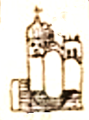

La Catedral de Guadalajara es uno de los monumentos más emblemáticos de la ciudad. Su construcción comenzó en 1561 y se completó en 1618 por el alarife Martín Casillas. Ha sufrido saqueos y varias modificaciones a lo largo de sus cuatro siglos debido a terremotos y restauraciones.

Antes de concluir la catedral actual, Guadalajara tuvo sedes provisionales. Como aclaración, el primitivo templo de San Miguel (actual Palacio de Justicia) era una parroquia y no una catedral, pues se edificó en 1542, antes del traslado de la diócesis desde compostela (1560). Tampoco es cierto que la primer Catedral de Guadalajara se ubicó en el actual templo de Santa María de Gracia1. La primera catedral formal fue llamada el Xacal Grande, con muros de adobe, en la actual Rotonda de los hombres ilustres, concluida a mediados de 1565, utilizada a la par de la construcción de la actual Catedral definitiva2. El Xacal Grande tenía un techo de paja que se quemó el 30 de mayo de 1574, fue cuando la capilla y parroquia votiva de Sn Miguel dentro del enorme claustro de Santa María de Gracia sirvió de breve sede temporal, en lo que se reconstruía el Xacal grande, ahora con un techo de terrado. La manzana de la actual rotonda era propiedad de la diocesis, y ahí estuvo la catedral provisional hasta la conclusión de la actual en 16183.
Ya en 1689, 1739 y 1750 hubo daños a la Catedral y sus torres originales, por lo que se requirieron recontrucciones4. Luego Las afectadas en el sismo de 1807 fueron sustituidas por otro par que colapsó en el terremoto de mayo de 18185. En 1843, el arquitecto Manuel Gómez Ibarra concluyó el Sagrario Metropolitano adjunto y, luego de que un sismo en 1849 derribara los remanentes de las torres dañadas, el propio Ibarra construyó entre 1851 y 1854 las estructuras neogóticas actuales, caracterizadas por su forma puntiaguda y su revestimiento de azulejos. Se calcula que ha habido 5 pares de torres diferentes coronando el recinto6.

Originalmente, el templo contaba con una decoración interior marcadamente barroca, similar a las Catedrales de Puebla o la CDMX, caracterizada por retablos de madera tallada, ensamblada y cubierta con hoja de oro. En un intento de deshispanizar el recinto, los altares dorados fueron desmantelados y destruidos a mediados del siglo XIX. En su lugar, se levantaron altares de mampostería, cantera y mármol, caracterizados por líneas rectas, frentes triangulares y columnas de estilo clásico, eliminando la cargada decoración previa 7.
Durante la Guerra de Reforma en 1859, un cañoneo contra el centro de la ciudad dañó la Catedral: un proyectil disparado desde el Hospicio Cabañas impactó en la torre norte y perforó la campana "La Purísima"8, dejando un agujero que aún es visible hoy en día. Decadas después, durante la revolución, en los saqueos de la toma de Guadalajara (1914), se sustrajo de la catedral una copia del cuadro de la Purísima creyendo que era el original de Murillo9 para trasladarla al Palacio de Gobierno; la obra auténtica permaneció resguardada en el sagrario.

Entre los tesoros artísticos y sagrados que resguarda el templo destaca la Virgen de la Rosa, una de las piezas más antiguas, rescatada de las catedrales provisionales antes de la inauguración de 1618. Asimismo, se venera al Señor de las Aguas, un histórico Cristo de gran devoción local ligado a milagros durante el temporal, y el valioso óleo de La Purísima Concepción, pintado por el maestro barroco español Bartolomé Esteban Murillo. En el ámbito de las reliquias, el recinto conserva el cuerpo de Santa Inocencia, una mártir de los primeros siglos del cristianismo traída desde Roma en el siglo XVIII que se exhibe dentro de una urna de cristal.
Hoy en día componen el conjunto arquitectónico de la Catedral Metropolitana de Guadalajara, además del templo catedral, el palacio arzobispal que se encuentra en la esquina de Morelos y Liceo y la parroquia del Sagrario Metropolitano, templo que se encuentra en la esquina del Paseo Alcalde y Morelos. En el sótano del templo se encuentran criptas de obispos, arzobispos y mártires.

1 La Catedral de Guadalajara. Tomo I. Su historia y significados. Juan Arturo Camacho Becerra.
2 La Catedral de Guadalajara. Tomo I. Su historia y significados. Juan Arturo Camacho Becerra.
4 Crónicas de los temblores en Guadalajara y su región 1567-1912. Carlos H. Loza Gutiérrez
6 El terremoto de Haití y la sismicidad de Guadalajara. Salvador Lazcano Díaz del Castillo
7 Guía Arquitectónica Esencial de la Zona Metropolitana de Guadalajara. Arabella González Huezo
8 Las Campanas de Catedral. Ramón Macías Mora
9 El preludio de un museo o el sueño de Ixca Farías. Graciela E. Abascal Johnson